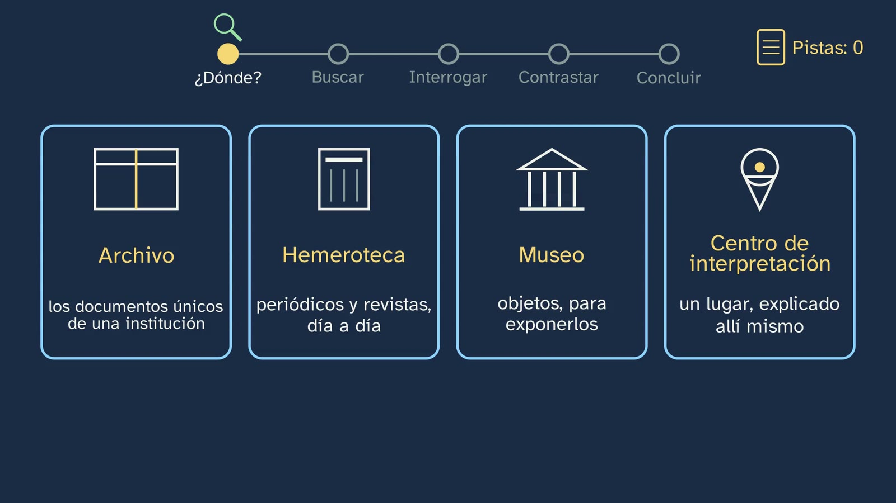
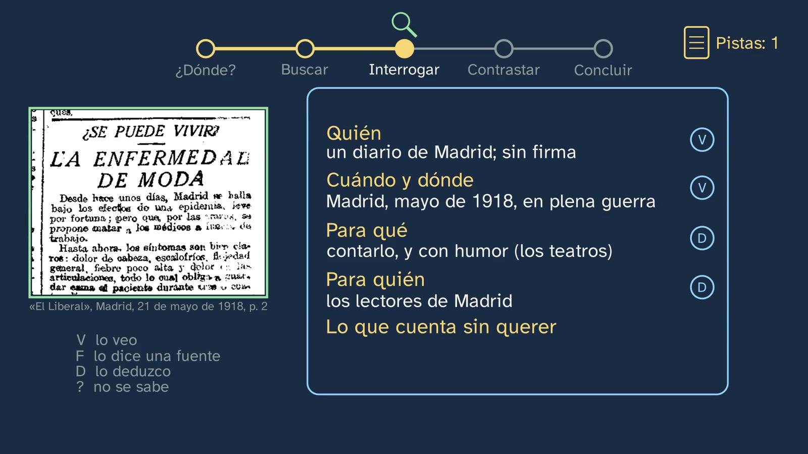
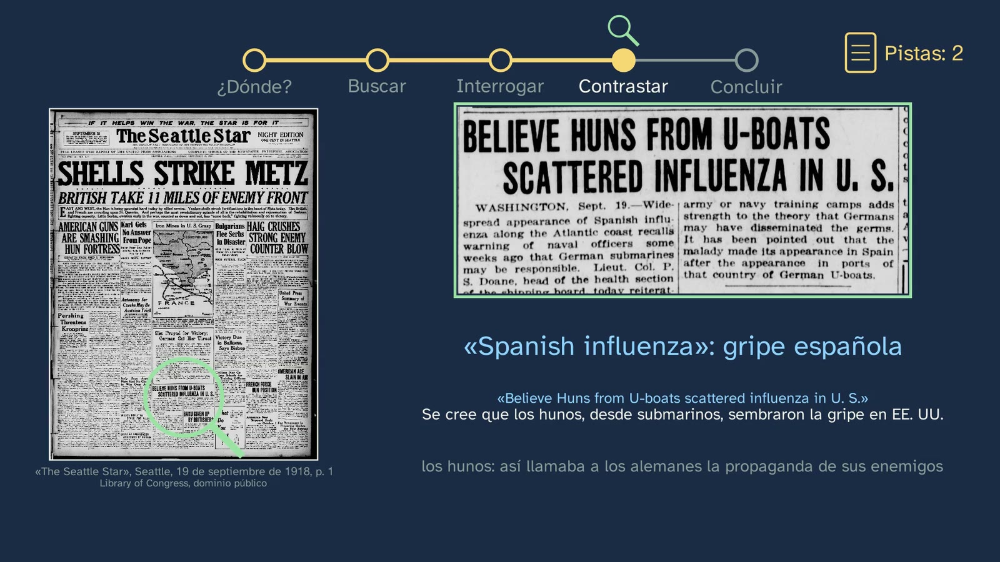

Taller: un día en el archivo
En pocas palabras
Es el primer taller de historia del curso: en Historia, el laboratorio es el archivo. La clase plantea una misión con un misterio real, ¿por qué la gripe de 1918 se llama «española», si casi seguro no empezó en España?, y la resuelve como lo haría un historiador, en cinco pasos que se ven en todo momento: decidir dónde buscar, buscar, interrogar, contrastar y concluir. Con documentos reales: la prensa de Madrid de mayo, junio y julio de 1918 en la Hemeroteca Digital de la Biblioteca Nacional de España (El Liberal, El Sol, España Nueva y La Acción) y un diario de Estados Unidos de septiembre (The Seattle Star, en la Biblioteca del Congreso).
Lo que se descubre: en esos periódicos españoles la epidemia es «la enfermedad de moda», «el soldado de Nápoles» o «la fiebre de los tres días», y de «española», ni rastro; fuera sí la llaman así, y el diario estadounidense, bajo el lema «If it helps win the war, the Star is for it», culpa a los alemanes con una opinión y dos coincidencias. La clase separa los hechos (lo que dicen las fuentes) de la interpretación de los historiadores (la censura de guerra y la mayor libertad de la prensa española en la primavera de 1918), y cierra con la idea de la clase 1: el nombre se equivoca sobre dónde empezó la epidemia, pero cuenta, sin querer, dónde se podía hablar de ella. Después, por qué la memoria de todos hay que conservarla, quién puede consultarla y las fuentes orales.
Objetivo. Al terminar, el alumnado sabrá qué guarda un archivo, una hemeroteca, un museo y un centro de interpretación, buscar un documento en una hemeroteca digital abierta, interrogarlo con las cuatro preguntas y contrastarlo, y explicar por qué el patrimonio documental es memoria de todos y hay que conservarlo.
Currículo
Real Decreto 243/2022, Historia del Mundo Contemporáneo, materia de modalidad de 1.º de Bachillerato en Humanidades y Ciencias Sociales (texto consolidado del BOE, comprobado el 04/10/2026). Es un «taller de historia», el formato que el propio decreto pide para la competencia 8: «trabajos de investigación, a modo de talleres de historia, en los que el alumnado lleve a cabo experiencias directas a través del uso de documentos de archivos o hemerotecas digitales y del trabajo con fuentes orales, gráficas o audiovisuales, especialmente en contextos locales».
| Elemento | Qué dice el decreto | Dónde se trabaja |
|---|---|---|
| Saber básico (bloque A, «Sociedades en el tiempo») | «El trabajo del historiador: fuentes históricas, historiografía y narrativas del pasado. […]» | Toda la clase: buscar, interrogar y contrastar fuentes primarias; la interpretación de los historiadores, separada de los hechos |
| Saber básico (bloque C, «Compromiso cívico») | «Conservación y difusión del patrimonio histórico: el valor patrimonial, social y cultural de la memoria colectiva. Archivos, museos y centros de divulgación e interpretación histórica.» | Las cuatro puertas (archivo, hemeroteca, museo y centro de interpretación) y «La memoria de todos»: conservar, la ley, el acceso y los archivos de cada provincia |
| Competencia específica 5 | «Identificar y reconocer los principales retos del siglo XXI a través de procesos avanzados de búsqueda, selección y tratamiento de la información, el contraste y la lectura crítica de fuentes, para entender el fenómeno histórico de la globalización, su repercusión en el ámbito local y planetario y en la vida cotidiana de las personas […]» | Su parte de método: buscar con varias palabras, saber que no todo está digitalizado, contrastar la prensa de dentro y de fuera. Una pandemia que da la vuelta al mundo en plena guerra mundial asoma también la globalización |
| Competencia específica 8 | «Describir y analizar los cambios y permanencias que se han producido en la sociedad contemporánea, los comportamientos demográficos, los modos de vida y el ciclo vital […], realizando proyectos de investigación y aplicando el pensamiento histórico para reconocer el valor e importancia de los personajes anónimos de la historia.» | El taller entero y su «Hazlo tú»: la gripe de 1918 en la prensa de la propia provincia (un comportamiento demográfico, en un contexto local) y una fuente oral de 2020 |
| Criterio 5.1 | «Analizar críticamente el fenómeno histórico de la globalización y su repercusión en el ámbito local y planetario, valiéndose del manejo de distintas fuentes de información y de una adecuada selección, validación, contraste y tratamiento de las mismas, previniendo la desinformación […]» | Su parte de método: seleccionar, validar y contrastar; la pista que no es prueba (la búsqueda que depende del OCR) y la coincidencia que no es causa (el Star) |
| Criterio 8.1 | «Analizar los cambios y permanencias en la historia, atendiendo a procesos de más larga duración, como los comportamientos demográficos, ciclos vitales y modos de vida en la sociedad contemporánea, a través del acercamiento al pensamiento histórico y la realización de proyectos de investigación […]» | El pequeño proyecto de investigación del «Hazlo tú» (la prensa de octubre de 1918 en la provincia del alumno, en una tabla) y la comparación 1918–2020 |
Lo que hay que traer. Las cuatro preguntas de la clase 1 (quién la hizo, cuándo y dónde, para qué y para quién) y la idea de que una fuente que se equivoca puede decir la verdad sobre otra cosa (la foto retocada de Trotski). De la ESO: el significado de archivos, bibliotecas y museos como patrimonio colectivo (Real Decreto 217/2022, Geografía e Historia de 1.º y 2.º).
Cómo está construida la clase
Capítulos del vídeo
| Minuto | Capítulo |
|---|---|
| 0:00 | Hoy, taller |
| 0:23 | Lo que ya sabes |
| 2:13 | La misión |
| 3:01 | ¿Dónde se busca? |
| 4:09 | Buscar |
| 5:37 | Interrogar |
| 7:20 | Contrastar |
| 13:12 | Concluir |
| 14:32 | La memoria de todos |
| 16:03 | Tu turno |
Unos diecisiete minutos y medio, en diez capítulos. La misión ordena la clase: el recorrido de cinco paradas, arriba, con la lupa en la de cada momento, y un cuaderno de pistas que suma una con cada hallazgo, hacen visible el razonamiento (Ritchhart, Church y Morrison, 2011) y evitan perder el hilo en una clase larga. El alumno interroga los documentos antes de oír la interpretación, como pide el decreto para estos talleres.
| Capítulo | Qué pasa | Por qué así |
|---|---|---|
| Hoy, taller | Tristán, por primera vez en la sala de un archivo, presenta el taller; en el mapa del tema, la clase de la lupa. | La escena del archivo es al taller lo que la bata al laboratorio de ciencias. |
| Lo que ya sabes | ¿Cuáles son las cuatro preguntas que se le hacen a una fuente? Pausa. Y las soluciones de los tres ejercicios de la clase 1, cortas. | Recuperar lo que el taller va a usar; la práctica espaciada, cerrada. |
| La misión | Tristán, a cámara: la gripe de 1918 dio la vuelta al mundo; la llamamos española, y casi seguro no empezó en España. La misión y sus cinco pasos. La apuesta, con tres opciones. | Una pregunta con respuesta contraintuitiva engancha; apostar compromete al alumno con una hipótesis que luego se comprueba (White y Gunstone, 1992). |
| ¿Dónde se busca? | Cuatro puertas: archivo, hemeroteca, museo y centro de interpretación, cada una con lo que guarda. ¿A qué puerta llamas para saber qué decían los periódicos de 1918? Pausa. A la hemeroteca, aunque la clase se llame «un día en el archivo». | El saber del bloque C, con un uso inmediato: elegir dónde buscar es el primer gesto de una investigación. |
| Buscar | La Hemeroteca Digital de la BNE (dibujada como esquema), una palabra y unas fechas; dos trucos: probar varias palabras, porque la máquina lee mal la letra antigua, y seguir las pistas de otros. El error típico: «todo está en internet». | Buscar bien se enseña: el OCR falla (en España Nueva lee «soldado d© Nápoles») y no todo está digitalizado. |
| Interrogar | El Liberal, 21 de mayo de 1918: «¿Se puede vivir? La enfermedad de moda». ¿Dice «gripe española»? Pausa. No. España Nueva, 5 de junio: los motes. La ficha de las cuatro preguntas: primero el alumno (pausa), después Tristán; y lo que cuentan sin querer: que parecía leve y que la prensa española hablaba con libertad, hasta criticando a las autoridades. | El documento, antes que la interpretación; las respuestas, con su marca: lo veo, lo dice una fuente, lo deduzco. |
| Contrastar | Buscando la frase «gripe española», no aparece hasta el 3 de julio, en un telegrama sobre Alemania (pista, no prueba); La Acción, 12 de julio, se burla del nombre que llega de fuera; The Seattle Star, 19 de septiembre: «Spanish influenza» y los «hunos» de los submarinos. ¿Qué pruebas da? Pausa. Una opinión y dos coincidencias: coincidir no es causar. Su lema. La censura de guerra y la prensa española, más libre en mayo; cada uno culpaba a otro país. Y dónde empezó: tres sospechosos (Estados Unidos, Francia, China), con sus pruebas y objeciones, el aviso de «Haskell» releído en el archivo, lo que dice la genética y lo que hoy se puede decir. | Contrastar dentro y fuera, y pesar cada pista: la que depende del OCR, la coincidencia que no es causa. |
| Concluir | Hechos (lo que dicen las fuentes) e interpretación (la de los historiadores), en dos columnas. Como la foto de Trotski: el nombre se equivoca sobre dónde empezó y cuenta dónde se podía hablar de ella. La apuesta, comprobada. | La clase 1 enseñó a distinguir hecho e interpretación; el taller lo modela con una explicación histórica real. |
| La memoria de todos | La misión sólo tuvo respuesta porque alguien guardó esos periódicos; el papel ácido; sólo lápiz en la sala. Los cuatro verbos de la ley (reúnen, conservan, ordenan, difunden) y el acceso; los archivos del Ministerio y los provinciales; las fuentes orales, y el alumno como fuente de 2020. | El porqué del patrimonio, después de haberlo necesitado. |
| Tu turno | La gripe en la prensa de tu provincia en octubre de 1918; las puertas; una fuente oral; la pregunta abierta; el Ágora y la clase siguiente. | Un pequeño proyecto de investigación local, como pide la competencia 8. |

Plan de una sesión de 50 minutos
| Minutos | Qué se hace |
|---|---|
| 0–4 | Sin vídeo: la apuesta, por escrito. ¿Por qué crees que la gripe de 1918 se llama «española»? Cada cual elige entre las tres opciones de la hoja y escribe por qué. |
| 4–12 | Vídeo hasta el final de «¿Dónde se busca?» (4:09). Parar en la pregunta de las puertas (3:51) y dejar que cada pareja elija y lo justifique. |
| 12–20 | Vídeo de 4:09 a 6:26: buscar y la primera noticia. En la pausa de la ficha (6:26), parar el vídeo: cada pareja rellena la ficha de El Liberal de la hoja (cinco minutos). |
| 20–32 | Vídeo de 6:31 a 13:12: comparar la ficha con la de Tristán, el contraste y los tres sospechosos. Parar en «¿Qué pruebas da el artículo?» (8:37): cada pareja busca las suyas en la traducción. |
| 32–38 | Vídeo de 13:12 a 16:03: la conclusión, la apuesta comprobada y la memoria de todos. Volver a las apuestas del principio: ¿quién acertó, y con qué razón? |
| 38–48 | La actividad (abajo): la gripe en la prensa de nuestra provincia, en la sala de ordenadores o con móviles. |
| 48–50 | Vídeo de 16:03 al final. La fuente oral, para casa con la hoja. |
Errores típicos y cómo se tratan
- «Todo está en internet, y lo que no está no existe». Es el error que la clase trata de frente (4:46). Lo desmontan dos datos: no todo está digitalizado (en la encuesta europea ENUMERATE de 2017, museos, bibliotecas y archivos habían digitalizado, de media, alrededor de una quinta parte de sus colecciones) y lo digitalizado no siempre se encuentra: el buscador de la BNE no lee la noticia de El Liberal que la clase enseña, y en la de España Nueva lee «soldado d© Nápoles». En España no hay una cifra global oficial de lo digitalizado; en PARES, el portal de los archivos estatales, tiene imagen el 37,58 % de lo descrito, que no es lo mismo que de todo lo que guardan.
- «El nombre dice de dónde viene». Es la apuesta número uno, la que sugiere el propio nombre, y la que la clase desmonta. Conviene que el alumnado la diga en voz alta antes de ver el vídeo: así la comprobación final se nota.
- «Coinciden, luego uno causa lo otro». El Seattle Star lo hace: la gripe aparece donde hay campamentos militares, y en España tras los submarinos alemanes, luego la han sembrado los alemanes. La clase lo convierte en un para y piensa (8:37): una opinión («It is quite possible…») y dos coincidencias no son pruebas.
- Dar la interpretación por un hecho. «La gripe se llamó española por la censura» se oye como un dato, y es la explicación que dan los historiadores porque encaja con las pistas (Trilla, Trilla y Daer, 2008: «It is usually accepted…»). La clase la pone en su columna (13:12). Y tiene matices que conviene conocer: España también tuvo censura previa en 1917 y entre el 1 de septiembre y el 17 de octubre de 1918, aunque no en mayo y junio de 1918, cuando llegó la gripe (del Valle, 1981, p. 124; una sola fuente, académica). Tampoco conviene decir que España fue «la única» o «la primera» en informar: la clase dice que su prensa la contaba con más libertad, que es lo que sostienen las fuentes.
- «Un archivo es un almacén de papeles viejos». Las cuatro puertas y la ley lo desmontan: un archivo reúne, conserva, ordena y difunde los documentos que produce una institución o una persona en su actividad (Ley 16/1985, art. 59), y lo de hoy también se archiva: la Biblioteca Nacional recoge las webs .es desde 2009 (Archivo de la Web Española, depósito legal desde el Real Decreto 635/2015).

Preguntas y soluciones
Para y piensa (dentro del vídeo)
- ¿Cuáles son las cuatro preguntas que se le hacen a una fuente? (0:30) Quién la hizo, cuándo y dónde, para qué y para quién (clase 1).
- La apuesta: ¿por qué crees que la llamaron española? (2:55) No se corrige aún: se comprueba al final (14:09). La uno (empezó en España) es lo que sugiere el nombre, y las pruebas dicen que casi seguro no fue así; la dos (en España fue más grave) tampoco encaja con las fuentes de la clase, que la daban por leve y, en junio, decreciendo; la que encaja con las pistas es la tres, otra razón: la prensa española la contaba con más libertad.
- ¿A qué puerta llamas para saber qué decían los periódicos de 1918? (3:51) A la hemeroteca: guarda periódicos y revistas, lo que se publicó día a día. Vale como respuesta parcial «a una biblioteca», porque las hemerotecas suelen estar en bibliotecas (la de la BNE lo está).
- ¿Dice «gripe española»? (5:42) No: «la enfermedad de moda», y la noticia añade que en un teatro la llaman «fiebre gripal».
- La ficha de El Liberal (6:26). Quién: un diario de Madrid, El Liberal; la noticia no va firmada (lo veo). Cuándo y dónde: Madrid, 21 de mayo de 1918, en plena Primera Guerra Mundial (lo veo; la guerra, lo dice una fuente). Para qué: contar lo que pasaba en la ciudad, y con humor: habla de los teatros, con actores y músicos enfermos (lo deduzco del tono). Para quién: los lectores de Madrid (lo deduzco). Lo que cuenta sin querer: que al principio parecía leve («leve por fortuna») y que la prensa española hablaba de la epidemia sin trabas, hasta en broma. Valen otras respuestas razonadas; lo que más enseña es la marca de cómo se sabe cada una.
- ¿Qué pruebas da el artículo del Seattle Star? (8:37) Una opinión de un militar («It is quite possible the epidemic was started by Huns sent ashore by boche submarine commanders», es muy posible que la empezaran hunos desembarcados por los comandantes de submarinos boches) y dos coincidencias: la enfermedad aparece en ciudades con campamentos militares y apareció en España después de que llegaran submarinos alemanes a sus puertos. Ninguna prueba que una cosa cause la otra. Y el artículo cuenta sin querer otra cosa: que en Estados Unidos se creía que la gripe había aparecido en España.

De la hoja del alumnado
- Dos trucos para buscar. Probar varias palabras («gripe», «epidemia», «enfermedad»), porque el ordenador lee mal la letra de los periódicos viejos y a veces no encuentra una palabra que sí está; y seguir las pistas de otros investigadores, que citan dónde encontraron un documento.
- ¿Hecho o interpretación? 1) Hecho: se lee en la página. 2) Interpretación bien apoyada: es la explicación de los historiadores («It is usually accepted…», Trilla, Trilla y Daer, 2008), porque encaja con todas las pistas de la clase; pero no hay un documento que lo diga así. 3) Hecho: se lee en la portada del 19 de septiembre de 1918. 4) Interpretación sin apoyo: el artículo sólo da una opinión y dos coincidencias, y coincidir no es causar. 5) Interpretación discutida: es una de las hipótesis (la defiende el historiador John M. Barry, 2004); otras apuntan a Francia o a China, y el origen sigue discutido (CDC; Worobey, Cox y Gill, 2019). Los ítems 4 y 5 son los que más enseñan: suenan a dato y no lo son.
Para practicar (las soluciones abren la clase 3)
- La gripe en la prensa de tu provincia, en octubre de 1918. Es abierta: cada provincia tiene su prensa. Criterios: la tabla completa (fecha, periódico, cómo la llama y las cuatro preguntas, cada una con su marca de cómo se sabe); al menos dos noticias de fechas distintas; y, para una nota alta, algo que cuenten sin querer (las medidas del ayuntamiento, las esquelas, los anuncios de remedios, si se quita hierro o se alarma) y una comparación con lo que se ha visto de Madrid en mayo. En octubre los periódicos usan ya a menudo «la gripe» o «la epidemia»; si alguno dice «española», que lo apunten: es un buen dato para la clase siguiente. Quien no encuentre prensa de su provincia de esas fechas puede usar la de la provincia más cercana, y decirlo.
- ¿A qué puerta llamarías? Las actas del ayuntamiento de tu pueblo en 1918: al archivo (el municipal de tu pueblo, o el histórico provincial). Un anuncio de un jarabe contra la gripe: a la hemeroteca. Un termómetro de la época: al museo (por ejemplo, uno de historia de la medicina o de la farmacia). Criterio: la razón, no la etiqueta: el archivo guarda lo que produce una institución en su actividad; la hemeroteca, lo publicado; el museo, objetos.
- Una fuente oral de 2020. Abierta. Criterios: quién lo cuenta, cuándo y dónde lo vivió, con su permiso; lo que es recuerdo, separado de lo que es opinión de hoy; y una fuente con la que contrastarlo (una noticia de aquellos días, un mensaje guardado, el recuerdo de otra persona). Cuidado: en muchas familias 2020 trae recuerdos tristes; la tarea pide elegir otro si es así, y no hay que compartir en clase nada que la familia no quiera.
Para seguir pensando. Si hoy tuvieras que guardar cinco cosas en un archivo para que dentro de cien años se entienda nuestra época, ¿cuáles guardarías? ¿Y quién debería decidir qué se guarda? No tiene respuesta de libro. Pistas para el debate, sin cerrarlo: ¿qué es más fácil que se pierda, un papel o un archivo digital? ¿Qué se guarda ya sin que lo decidamos (la BNE archiva las webs .es)? ¿Qué no se guarda nunca (las conversaciones, lo cotidiano), y por eso valen tanto las fuentes orales? ¿Debería decidirlo el Estado, los historiadores, cada uno? El profesor modera y no da su veredicto.

Una actividad para el aula
La gripe de 1918 en nuestra provincia (unos 12 minutos en clase, que pueden ampliarse a una sesión). Es el «Hazlo tú» del taller, hecho en grupo, y trabaja los criterios 5.1 y 8.1.
Material: ordenadores o móviles, y la tabla de la hoja del alumnado. Dónde buscar: la Biblioteca Virtual de Prensa Histórica del Ministerio de Cultura, que reúne la prensa digitalizada de todas las comunidades (más de 17 millones de páginas, desde 1730); la Hemeroteca Digital de la BNE; y la biblioteca digital de cada comunidad (tabla de abajo).
- Repartir (2 minutos). Cada grupo, una quincena de octubre de 1918 (del 1 al 15 o del 16 al 31) y un periódico de la provincia (o de la más cercana).
- Buscar (5 minutos). Con varias palabras: «gripe», «epidemia», «grippe»; si el periódico está en catalán, gallego o euskera, también en esa lengua (y comprobar qué palabra usaban entonces). Si el buscador no encuentra nada, hojear las páginas del día: el OCR falla.
- Interrogar (3 minutos). Una noticia por grupo, en la tabla: fecha, periódico, cómo la llama y las cuatro preguntas con su marca.
- Poner en común (2 minutos). En la pizarra, una línea por grupo. ¿Cambia el tono de una quincena a otra? ¿Alguien la llama «española»?
Para el profesorado: en el pico de octubre, muchos periódicos dedicaban páginas enteras a esquelas (Trilla, Trilla y Daer, 2008): mirarlas también es investigar, con delicadeza. Y una pregunta para quien vaya más lejos: entre el 1 de septiembre y el 17 de octubre de 1918 hubo censura previa en toda España (del Valle, 1981, p. 124, una sola fuente). ¿Se nota en lo que encontráis? ¿Hay huecos en blanco o el rótulo «visado por la censura»? Lo que encuentren, la clase lo puede compartir en el Ágora, en el hilo de esta clase.
Las bibliotecas digitales de cada comunidad (comprobadas el 04/10/2026; la prensa de todas está además en la Biblioteca Virtual de Prensa Histórica):
| Comunidad | Biblioteca digital | Prensa histórica |
|---|---|---|
| Andalucía | Biblioteca Digital de Andalucía | parcial |
| Aragón | Biblioteca Virtual de Aragón | sí |
| Asturias | Biblioteca Virtual del Principado de Asturias | sí |
| Illes Balears | Biblioteca Digital de les Illes Balears | sí |
| Canarias | Jable, Archivo de Prensa Digital de Canarias | sí |
| Cantabria | (sin biblioteca digital autonómica) | en la BVPH |
| Castilla y León | Biblioteca Digital de Castilla y León | sí |
| Castilla-La Mancha | Patrimonio Digital de Castilla-La Mancha | sí |
| Cataluña | ARCA y Premsa digitalitzada de la XAC | sí |
| Comunitat Valenciana | BIVALDI | sí |
| Extremadura | Ciconia | en la BVPH |
| Galicia | Galiciana | sí |
| Comunidad de Madrid | Biblioteca Digital de Madrid | sí |
| Región de Murcia | Biblioteca Digital de la Región de Murcia | en la BVPH |
| Navarra | Biblioteca Navarra Digital | en la BVPH |
| País Vasco | Euskariana | sí |
| La Rioja | Biblioteca Virtual de La Rioja | en la BVPH |
| Ceuta y Melilla | (sin biblioteca digital propia) | en la BVPH |
Recursos abiertos: hemerotecas del mundo
Lo que la clase enseña se puede seguir haciendo con prensa de todo el mundo, gratis y sin registro. Doce hemerotecas digitales comprobadas el 04/10/2026, de la más cercana a la más lejana; todas tienen buscador de texto completo.
| Hemeroteca | Qué ofrece |
|---|---|
| Biblioteca Virtual de Prensa Histórica (España) | La primera puerta: prensa de todas las provincias, en castellano y en las lenguas cooficiales, con licencia libre. Tiene también el Diario de la Marina de La Habana |
| Hemeroteca Digital de la BNE (España) | Los grandes diarios de Madrid de 1918 (El Sol, El Liberal…) y revistas americanas como Caras y Caretas |
| Hemeroteca de La Vanguardia (España) | Un diario entero, día a día, desde 1881, con un buscador muy cómodo por fechas. Gratis a cambio de aceptar las cookies de publicidad: con menores, mejor que la abra el docente |
| Europeana, «Periódicos» (Europa) | Una sola búsqueda en la prensa de muchos países europeos, con la interfaz en español |
| Gallica (Francia) | La prensa de un país en guerra y con censura, para compararla con la española (consulta y uso no comercial, gratis) |
| ANNO (Austria) | El otro bando de la guerra: la Neue Freie Presse de Viena, día a día |
| Le Temps archives (Suiza) | Otro país neutral, como España, en francés y con un buscador sencillo |
| Chronicling America (EE. UU.) | Millones de páginas, 88 periódicos en español y una guía de la Library of Congress sobre la gripe de 1918 |
| Trove (Australia) | La más fácil: cada artículo sale aparte y con su texto, y basta una palabra |
| Hemeroteca Nacional Digital de México (México) | Prensa mexicana en español, con un buscador que resalta la palabra en la página |
| Digital Library of the Caribbean (Cuba, Puerto Rico…) | Prensa caribeña en español con texto completo |
| Colecciones digitales del IAI de Berlín (Argentina y otros) | Revistas ilustradas latinoamericanas, con la interfaz en español |
Palabras para buscar la gripe de 1918: «gripe», «grippe», «influenza» y «epidemia» en español (la prensa de 1918 escribía mucho «grippe»); «grip» en catalán; «grippe espagnole» en francés; «spanische Grippe» en alemán; «Spaansche griep» en neerlandés, con la ortografía de entonces; «Spanish influenza» en inglés; «febbre spagnola» en italiano.
La gripe de 1918 en la prensa del mundo (números comprobados el 04/10/2026; cada uno abre en su hemeroteca):
| País | Periódico y fecha | Lo que dice |
|---|---|---|
| España | La Vanguardia, 31-10-1918, p. 6 | «…quedando contagiado de dicha enfermedad…» (la grippe) |
| España (Cataluña) | El Baix Penedès, 5-10-1918, p. 2 | «a causa de la forta invasió de grip» |
| Cuba | El Imparcial (La Habana), 2-12-1918, p. 7 | «La influenza española» |
| México | El Pueblo, 20-11-1918, portada | «Chávez García falleció, víctima de la influenza» |
| Argentina | Mundo Argentino, 13-11-1918, p. 3 | «El decálogo contra la grippe» |
| Portugal | Ilustração Portugueza, n.º 661, 21-10-1918 | «grippe pneumonica» |
| Francia | Le Petit Parisien, 16-10-1918, p. 2 | «Comment se préserver de la grippe» |
| Países Bajos | Nieuwsblad van het Noorden, 17-10-1918 | «De Spaansche griep» |
| EE. UU. | The Washington Times, 6-10-1918, p. 22 | «Medical Science's Newest Discoveries about the 'Spanish Influenza'» |
| Australia | Sunday Times (Perth), 27-10-1918, p. 1 | «Spanish influenza. Hour it might reach us» |
| Nueva Zelanda | Poverty Bay Herald, 7-10-1918, p. 5 | «Spanish "grippe."» |
Una comparación para el aula: un país neutral frente a uno en guerra, en octubre de 1918: La Vanguardia o la BVPH (España) frente a Le Petit Parisien (Francia), o el Journal de Genève (Suiza, en Le Temps archives) frente a la Neue Freie Presse (Austria, en ANNO). ¿Cómo la llama cada uno? ¿Cuánto espacio le da? Antes de la clase, conviene abrir los enlaces desde la red del centro: algunas webs extranjeras bloquean ciertas redes.
Dónde empezó: para el profesorado
La clase presenta tres sospechosos y lo que hoy se puede decir. Lo que no cabe en el vídeo, con sus fuentes:
- Kansas. El brote de Camp Funston (marzo de 1918) fue leve: muchos enfermos y pocos muertos (Worobey, Cox y Gill, 2019). La hipótesis de John M. Barry sitúa el origen en el condado de Haskell, en enero de 1918, y la sigue la Oficina del Censo de EE. UU. (2023). En contra: la primera ola de Nueva York, de febrero a abril de 1918 (Olson y otros, 2005, deducida de la mortalidad, sin muestras), y el estudio de Peter Grant (2020), que atribuye el aviso del 5 de abril a Haskell Institute, en Lawrence. El informe original de ese brote, del 30 de marzo, está en los National Archives (NAID 2641555). En los registros de la Junta de Salud de Kansas de 1918, el condado de Haskell no tiene ninguna muerte por gripe en todo el año. No se debe decir «la teoría más aceptada es Kansas»: lo fue hasta 2005.
- Étaples y Aldershot. La «bronquitis purulenta» de 1916–1917 (Hammond, Rolland y Shore, The Lancet, 1917) mataba sobre todo a soldados de 25 a 35 años y daba una cianosis «heliotropo», como la gripe de 1918. Los médicos de Aldershot escribieron en 1919 que era «fundamentally the same condition». En abril de 2026, Gill y Oxford insisten en esta hipótesis con registros de hospitales británicos, y reconocen que sin tejidos de aquellos enfermos la relación «will never be established». En contra: aquella enfermedad no salió de los campamentos, y en catorce países europeos la mortalidad subió casi a la vez en otoño de 1918 (Ansart y otros, 2009).
- China. Humphries (2014) halló en archivos británicos y canadienses una enfermedad respiratoria en el norte de China en noviembre de 1917. En contra: en Francia, los trabajadores chinos enfermaron después que las unidades de al lado (Shanks, 2016), y no hubo brotes en Canadá, por donde pasaron. A favor: en China la pandemia fue más suave (Langford, 2005; Cheng y Leung, 2007), y Langford lo explica, como conjetura, por una inmunidad previa.
- La genética. El virus se reconstruyó entre 1997 y 2005 con pulmones guardados en parafina desde 1918 y el de una víctima enterrada en el suelo helado de Brevig Mission (Alaska). Casi todos sus genes son de aves; cuándo se formó varía según el estudio (Worobey: hacia 1915; Taubenberger: en 1918 o poco antes). La única pista algo convincente sobre el lugar, «by no means conclusive», es que los genes de ave parecen de aves de América del Norte (Worobey, Cox y Gill, 2019), lo que no equivale a Kansas.
- Por qué murieron tantos jóvenes, una pregunta que suelen hacer: el pico de muertes estuvo hacia los 28 años. La explicación con más apoyo es una hipótesis: la gripe que pasaron de bebés, la de 1889–1890 (Gagnon y otros, 2013; Worobey, Han y Rambaut, 2014).

Para saber más
- Otros nombres. En Senegal se la llamó «gripe brasileña»: llegó a Dakar con barcos de la marina brasileña, y el único expediente del Archivo Nacional de Senegal sobre la pandemia se titula «La Grippe Brésilienne, Dakar, 1918» (Echenberg, 2003; Spinney, 2017).
- El Gobierno de Estados Unidos, en 1918. El boletín del director general de Sanidad, Rupert Blue, la llama «Spanish influenza» en la misma frase en que dice que «there is no reason to believe that it originated in Spain» (reproducido en el Anaheim Gazette, 17-10-1918, p. 3). El nombre ya se había quedado.
- Hoy. La Organización Mundial de la Salud recomienda desde 2015 no poner a las enfermedades nuevas nombres de lugares, y cita la «gripe española» como ejemplo a evitar.
- Conservar. La Declaración de Independencia de los Estados Unidos apenas se lee: pasó treinta y cinco años frente a una ventana soleada en la Oficina de Patentes (1841–1876), y hoy se guarda en vitrinas de titanio con argón (National Archives). Si dañó también la copia de 1823 es algo que, según sus propios conservadores, quizá nunca se sepa.
- Fuentes orales. Ronald Fraser entrevistó entre 1973 y 1975 a unas trescientas personas de las dos zonas para Recuérdalo tú y recuérdalo a otros (Crítica, 1979), la historia oral de la Guerra Civil. En España hay archivos de fuentes orales como el Archivo de la Palabra de Castilla-La Mancha, sobre la vida cotidiana de principios del siglo XX.
Fuentes
- Real Decreto 243/2022, texto consolidado (BOE): https://www.boe.es/buscar/act.php?id=BOE-A-2022-5521. Real Decreto 217/2022 (ESO): https://www.boe.es/buscar/act.php?id=BOE-A-2022-4975.
- Los periódicos de 1918, Hemeroteca Digital de la Biblioteca Nacional de España (imágenes de dominio público, CC BY 4.0, «Imágenes procedentes de los fondos de la Biblioteca Nacional de España»): El Liberal, 21-5-1918, p. 2 (https://hemerotecadigital.bne.es/hd/es/viewer?id=3c40dacd-aeea-4037-a167-ed792a775846&page=2); El Sol, 28-5-1918, p. 1 (https://hemerotecadigital.bne.es/hd/es/viewer?id=ee063aa1-ab57-446a-805b-e1358605960e&page=1) y 3-7-1918, p. 5 (https://hemerotecadigital.bne.es/hd/es/results?id=0c777186-cb25-4451-91ec-a571abd49416); España Nueva, 5-6-1918, p. 4 (https://hemerotecadigital.bne.es/hd/es/viewer?id=5572a8fb-76e7-4cbf-97b6-01fb95d0fa5f&page=4); La Acción, 12-7-1918, p. 1 (https://hemerotecadigital.bne.es/hd/es/viewer?id=129c3adf-4b65-49a7-9472-a19f83b16f25&page=1).
- The Seattle Star, 19-9-1918, Night Edition, p. 1 (LCCN sn87093407), Chronicling America, Library of Congress, dominio público: https://www.loc.gov/resource/sn87093407/1918-09-19/ed-1/?sp=1.
- A. Trilla, G. Trilla y C. Daer (2008). The 1918 «Spanish Flu» in Spain. Clinical Infectious Diseases, 47(5), 668–673: https://doi.org/10.1086/590567.
- G. Chowell, A. Erkoreka, C. Viboud y B. Echeverri-Dávila (2014). Spatial-temporal excess mortality patterns of the 1918–1919 influenza pandemic in Spain. BMC Infectious Diseases, 14, 371: https://doi.org/10.1186/1471-2334-14-371.
- J. A. del Valle (1981). La censura gubernativa de prensa en España (1914-1931). Revista de Estudios Políticos, 21, 73–126: https://dialnet.unirioja.es/descarga/articulo/26656.pdf.
- Sobre el origen, aún discutido: CDC, «1918 Pandemic (H1N1 virus)»: https://archive.cdc.gov/www_cdc_gov/flu/pandemic-resources/1918-pandemic-h1n1.html; M. Worobey, J. Cox y D. Gill (2019). Evolution, Medicine, and Public Health, 2019(1), 18–25: https://doi.org/10.1093/emph/eoz001.
- La censura de prensa en Estados Unidos: National Archives, Records of the Committee on Public Information («Administered voluntary press censorship»): https://www.archives.gov/research/guide-fed-records/groups/063.html.
- «Hunos» en la propaganda aliada: University of East Anglia, «Wilhelm II's 'Hun Speech' and its alleged resemiotization during World War I»: https://ueaeprints.uea.ac.uk/id/eprint/65777/.
- M. Echenberg (2003). «The dog that did not bark»: Memory and the 1918 influenza epidemic in Senegal. En H. Phillips y D. Killingray (eds.), The Spanish Influenza Pandemic of 1918-19: New Perspectives. Routledge.
- R. Blue, «Uncle Sam's Advice on Flu», en Anaheim Gazette, 17-10-1918, p. 3: https://yoreanaheim.com/view/anaheim_gazette_1918_ag_1918_10_17/2.
- OMS, «WHO issues best practices for naming new human infectious diseases», 8 de mayo de 2015.
- Ley 16/1985 del Patrimonio Histórico Español, arts. 57 y 59: https://www.boe.es/buscar/act.php?id=BOE-A-1985-12534. Constitución española, art. 105: https://www.boe.es/buscar/act.php?id=BOE-A-1978-31229.
- Archivos Estatales: normas de acceso y consulta (2024) y preguntas frecuentes de PARES: https://pares.cultura.gob.es/preguntas-frecuentes.html; los archivos: https://pares.cultura.gob.es/archivos-estatales.html; los gestionados por las comunidades: https://www.cultura.gob.es/cultura/archivos/archivos-y-centros/gestion-autonomica.html.
- ENUMERATE Core Survey 4 (2017), Europeana: https://www.infodocket.com/2017/11/23/europe-charting-trends-in-digitisation-of-european-heritage-collections-results-from-enumerate-survey/.
- Library of Congress, «The Deterioration and Preservation of Paper: Some Essential Facts»: https://www.loc.gov/preservation/care/deterioratebrochure.html.
- National Archives (EE. UU.), «The Declaration of Independence: A History»: https://www.archives.gov/founding-docs/declaration-history.
- R. Ritchhart, M. Church y K. Morrison (2011). Making Thinking Visible. Jossey-Bass. R. White y R. Gunstone (1992). Probing Understanding. Falmer Press.
- Imágenes: los periódicos, arriba; el hospital de urgencia de Camp Funston (Kansas), hacia 1918, National Museum of Health and Medicine, NCP 1603, dominio público: https://commons.wikimedia.org/wiki/File:Emergency_hospital_during_Influenza_epidemic,_Camp_Funston,_Kansas_-_NCP_1603.jpg; las fotos de 1937 y la de Lenin, las de la clase 1 (Wikimedia Commons). El mapa de España y el mapamundi, de Natural Earth (dominio público).

Sobre esta clase
GinCol Lab es un canal gratuito de ciencia para curiosos. Tristán es un personaje ilustrado, no una persona real, y su voz es sintética: está generada por ordenador con Microsoft Azure AI Speech y no imita a ninguna persona conocida. La ilustración y la escena del archivo se crearon con la generación de imágenes de OpenAI. El guion y esta ficha los escribe una IA (Claude, de Anthropic) y los revisa una persona; cada dato está comprobado en dos fuentes o en la original.
Esta ficha se publica con licencia Creative Commons Reconocimiento 4.0: puedes copiarla, adaptarla y usarla en tu aula citando a GinCol Lab. Las imágenes de los periódicos tienen su propia licencia (dominio público; las de la BNE, CC BY 4.0, citando su procedencia).
Cómo citar esta ficha
GinCol Lab (2026). Taller: un día en el archivo. Ficha docente de GinCol Lab: Historia del Mundo Contemporáneo · 1.º de Bachillerato · El oficio de historiador · Clase 2 de 6. https://gincollab.github.io/aula/historia-mundo-contemporaneo/t01-c2/. CC BY 4.0.
Ficha docente de GinCol Lab · CC BY 4.0 · Código fuente y erratas